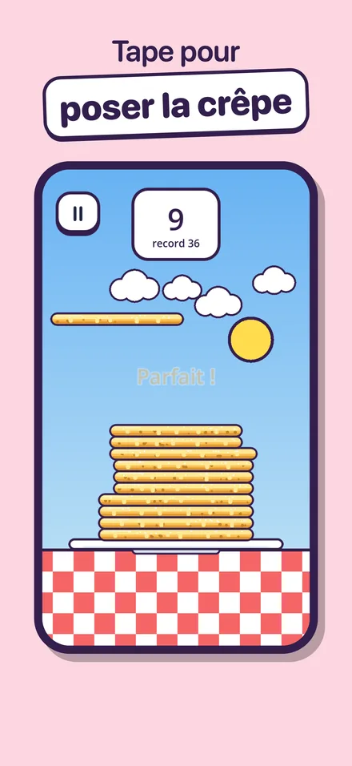
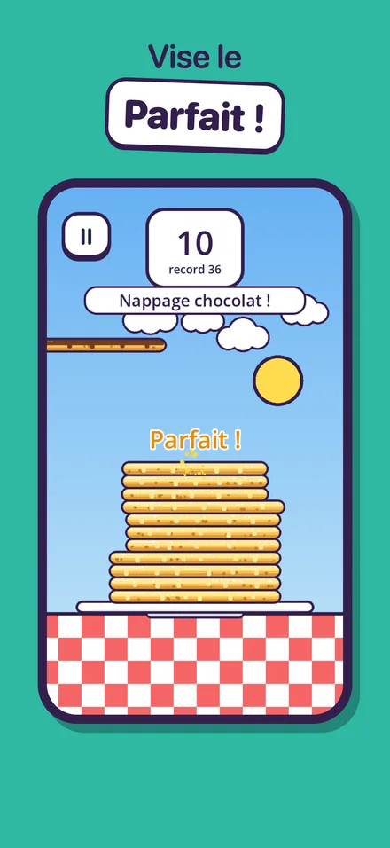
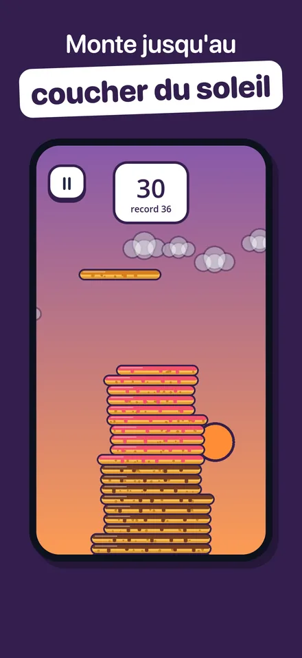
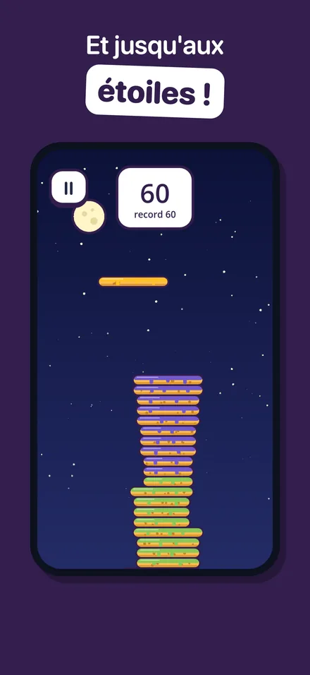
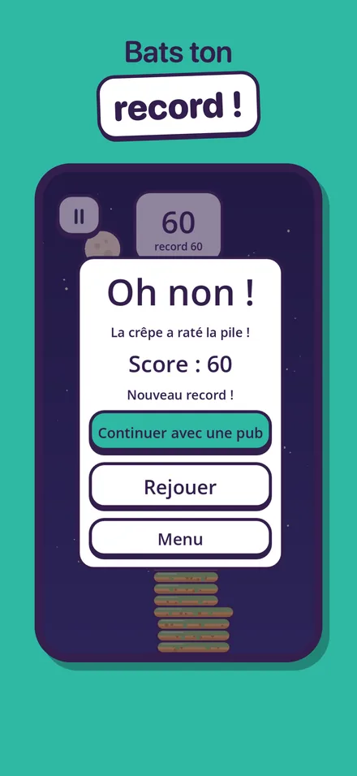
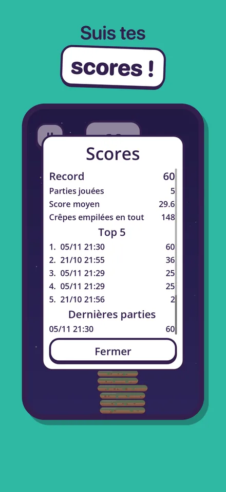
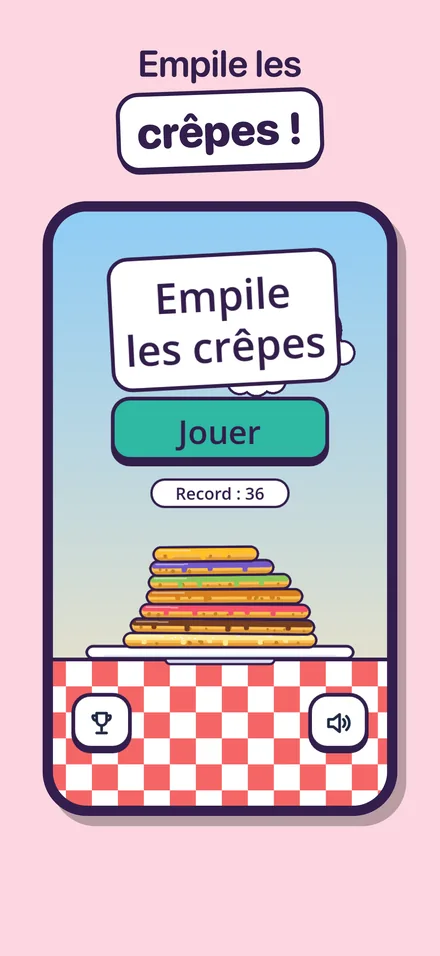

Un seul geste, des crêpes à l'infini
Une crêpe glisse au-dessus de l'assiette : tape pour la faire tomber sur la pile. Tout ce qui dépasse est découpé, et la pile rétrécit. Des parties de 30 secondes à 2 minutes, jouables d'une seule main, parfaites pour une pause.
Le jeu en images







Comment jouer
- Tape n'importe où pour lâcher la crêpe
- La partie qui dépasse est découpée : plus tu es précis, plus la crêpe reste large
- Si la crêpe ne touche pas du tout la pile, c'est perdu
- Ton score, c'est le nombre de crêpes posées, et ton record est enregistré
Ce qui t'attend
- « Parfait ! » : à moins de quelques pixels, la crêpe se cale pile, sans découpe
- 3 parfaits d'affilée et la crêpe s'élargit
- Un nappage différent toutes les 10 crêpes : chocolat, fraise, caramel, pistache…
- Un décor qui passe du matin au coucher de soleil, puis à la nuit étoilée
- Une vitesse qui augmente, des sons gourmands et des vibrations
Questions fréquentes
Qu'est-ce qu'un « Parfait » ?
Si ta crêpe tombe à moins de 6 pixels de la crêpe du dessous, elle se cale pile et garde toute sa largeur. Trois parfaits d'affilée la rendent un peu plus large.
Ma progression a disparu
Le record et le réglage du son sont enregistrés uniquement dans ton téléphone. Ils sont effacés si tu supprimes le jeu et ne passent pas d'un téléphone à l'autre.
Le jeu n'a pas de son
Vérifie le bouton son du menu, puis que ton téléphone n'est pas en mode silencieux.
Publicités et vie privée
Il n'y a jamais de publicité pendant une partie : seulement une publicité de temps en temps entre deux parties, et une vidéo facultative pour continuer après une défaite. En Europe, ton consentement est demandé au premier lancement ; sur iPhone, le suivi publicitaire se règle aussi dans Réglages > Confidentialité et sécurité > Suivi. Détails dans la politique de confidentialité.
Nous contacter
Un bug, une question, une idée de nappage ?
Écris à labasquelucas@gmail.com
Indique ton modèle de téléphone : on répond sous quelques jours.